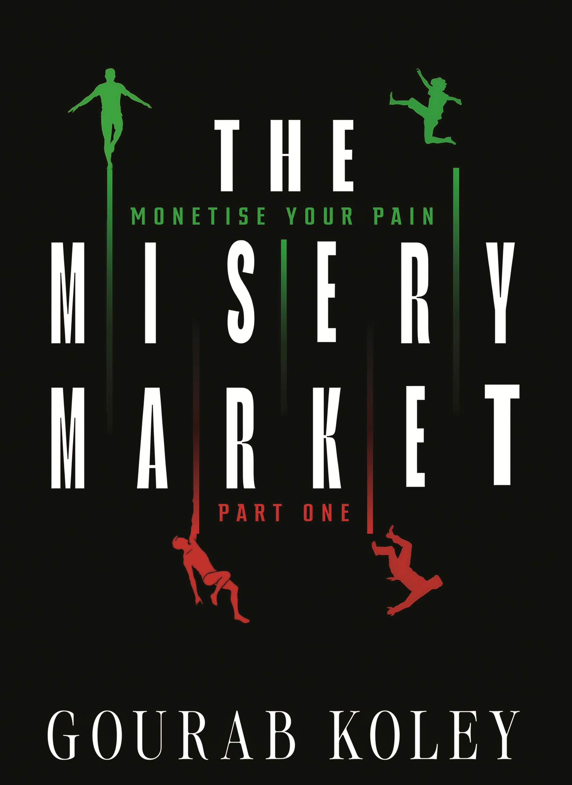

We once lived in a world where suffering was endured in silence. Therapy promised relief, but words rarely healed, and grief remained a private inheritance. Pain defined us, but it offered no escape. Not really.
Dr Elias Morran refused to accept that. Tired of trying to talk his problems away, he set out to build something revolutionary. A system that could measure pain, trade misery, and sell relief as easily as hope.
When the Misery Market was finally born, the world rejoiced. Real pain found real relief, and no one noticed as Elias’s system slowly took over the world.
Elias believed he had built the perfect system. For a time, everyone else believed it too, encouraging him to expand the Market in ways he never thought possible. But that was before the anomalies began to appear. Outliers slowly turned to trends, whispers turned to protests. With everything threatening to come crashing down, Elias is in the eye of the storm.
Can he fix the disease at the centre of his life’s work, or will it tear him apart?
If you could sell your pain… what would you trade away and what would you cling to?
BUY THIS PACKAGE